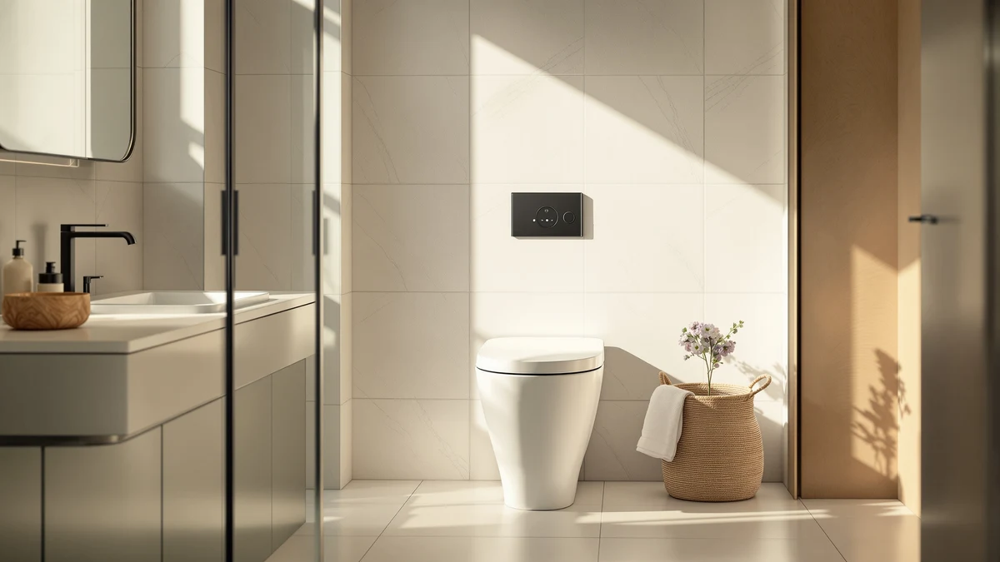

Best One Piece Toilet Brands (2026)
Prices and picks verified as of September 2026. Independent, reader-supported reviews.


Quick Answer
DeerValley is our pick among the one piece toilet brands we compared: its Elongated One Piece Toilet pairs an ADA-height seat, an 800-gram MaP flush rating and a self-cleaning skirted body. HOROW, Casta Diva and WinZo all make solid alternatives if your rough-in or budget points a different direction. Measure your rough-in before you order, since even the best brand cannot fix the wrong toilet for your bathroom.
Our pick: DeerValley Elongated One Piece Toilet, priced at $257.55 Check Price on Amazon
Bottom line: our top pick is the DeerValley Elongated One Piece Toilet with Efficient Dual at $257.55. The best budget option is the One Piece Toilet Elongated with 17.4" ADA Height Comfort Seat at $109.99.
Things to Know Before You Buy
- Warranty and parts support vary a lot between one-piece toilet brands: DeerValley and HOROW back their toilets with US-based customer service and readily available replacement parts, while newer names like Majnesvon and Lamanelle are still building that track record.
- MaP flush score matters more than the logo: a Maximum Performance (MaP) rating of 800 grams or higher means the toilet clears solid waste in a single flush, and several picks here reach 1000 grams.
- Rough-in size is not always 12 inches: most one-piece toilets are built for the standard 12 inch rough-in, but HOROW's T0338W is one of the few 10 inch options, which matters if your plumbing predates the 12 inch standard.
- Dual-flush GPF ratings differ by brand: DeerValley and Majnesvon use a 1.1/1.6 gallon-per-flush split, while Casta Diva's WaterSense-certified system drops as low as 0.8/1.28 GPF.
- Included accessories add real value: a soft-close seat already in the box, like on the Lamanelle model here, saves $30 to $50 versus brands that sell the seat separately.
The best one piece toilet brands don't necessarily have the biggest marketing budgets. What matters is whether their dual-flush systems, MaP flush ratings and rough-in options hold up once verified owners actually install them. Names like DeerValley, HOROW, WinZo and Casta Diva show up across dozens of listings, but their one-piece toilets differ in flush power, seat height and rough-in compatibility once you get past the photos. A brand's reputation should rest on those specs, not on how many five-star reviews it can buy.
We compared seven one-piece toilets from six brands on the details that predict whether a toilet holds up after the first year: MaP flush scores, rough-in size, seat height, and whether a soft-close seat ships in the box. DeerValley appears twice in this list because its dual-flush engineering earns it, not because we ran out of other brands to consider. HOROW, WinZo, Casta Diva, Majnesvon and Lamanelle round out the group: HOROW fits a rare 10 inch rough-in, WinZo shaves inches off the depth for tight bathrooms, and the Majnesvon pick trades white porcelain for a green finish.
Below, you will find our top pick from DeerValley, five strong alternatives, and a comparison table that puts flush ratings and prices side by side. Every pick here ships to US addresses and lists a verifiable rough-in, seat height and flush rating, the three numbers that decide whether a one-piece toilet brand's reputation is earned or only marketed.
Why You Should Trust Us
This guide is written and maintained by Ilane Tall, who runs a network of bathroom-focused review sites and spends more time than is reasonable comparing one-piece toilet brands on the specs that actually predict satisfaction rather than marketing copy. We do not run a fake testing lab and we did not install seven toilets from six brands in a warehouse. What we do is read every spec sheet, cross-check MaP flush ratings, rough-in size and seat height against listing photos and hundreds of verified owner reviews, flag the complaints that repeat across a brand's other listings, and refuse to recommend a toilet we would not put in our own home. Our Amazon commissions never change a ranking.
How We Picked
We started with one-piece toilet brands that are actually in stock and shipping to US addresses, then filtered on the numbers that separate a dependable brand from a risky one: a MaP flush rating of at least 800 grams, a documented rough-in measurement, and a seat height that is either standard or clearly labeled ADA comfort height. We gave extra weight to brands like DeerValley and HOROW that back their toilets with US-based support and readily available replacement parts, since a strong flush rating means little if you cannot get a wax ring or a fill valve replaced later. We set aside brands with a pattern of cracked-on-arrival complaints or missing hardware, and we made sure the final seven span a real range of prices and rough-in sizes so there is a sensible brand for almost any bathroom.
How We Compared
Since we do not stage a warehouse full of installed toilets, our evaluation of these one-piece toilet brands is a documentation and owner-experience review rather than a physical lab test, and we would rather say that plainly than fake a testing rig. For each brand, we checked the published MaP flush rating, rough-in size and seat height against what verified buyers report after months of daily use. We also looked for failure patterns that repeat across a brand's other listings, such as running fills or seat hinges that loosen, and compared how the dual-flush technology and water use stack up at each price point. Where a listing claimed a feature we could not corroborate in owner feedback, we treated it skeptically. The result is a brand-by-brand shortlist built on flush data and real-world complaints rather than star ratings alone.
Our Picks

DeerValley Elongated One Piece Toilet
What we like
- ADA-compliant 17-3/8 inch seat height that is comfortable for most adults
- 800-gram MaP flush rating clears waste in a single flush
- 1.1/1.6 GPF dual flush cuts water use without sacrificing power
- Self-cleaning glazed skirted body wipes down in one pass, with no tank-to-bowl seam
Flaws but not dealbreakers
- Costs more than DeerValley's own compact model below
- No bidet or smart features if that is what you want
| Material | — |
| Size | 12" Rough In |
DeerValley built its reputation on dual-flush engineering, and the Elongated One Piece Toilet is the clearest example of it in this lineup. The 1.1/1.6 GPF system is backed by an 800-gram MaP rating, high enough to clear solid waste in a single flush according to the manufacturer's published test, and the ADA-compliant 17-3/8 inch seat height means most adults can sit down and stand up without strain.
The skirted, self-cleaning glazed surface is the other reason this toilet leads a guide about one-piece toilet brands rather than individual models. DeerValley applies the same finish across its lineup, so the easy-clean surface is not a one-off feature you might miss on the next toilet you buy from the brand. The honest tradeoff is price, since DeerValley's own compact model below costs nearly $80 less if you do not need the extra bowl length.

WinZo Compact One Piece Toilet
What we like
- Protrudes 22.8 inches from the wall, among the shortest depths we found
- 3.15 inch extra-large trapway resists clogging
- Skirted, concealed-trapway design keeps the streamlined look easy to clean
Flaws but not dealbreakers
- The most expensive toilet in this comparison
- 16 inch seat height sits below the ADA comfort range other brands here offer
| Material | — |
| Size | — |
WinZo built this toilet around a single number: 22.8 inches of depth, several inches shorter than most one-piece toilet brands manage while still using a standard 12 inch rough-in. That makes it one of the few realistic options for a half-bath or a mobile-home bathroom where a few extra inches of floor space actually matter.
The extra-large 3.15 inch trapway is a genuine engineering advantage, since compact toilets often trade flush power for their smaller footprint, and WinZo does not appear to make that compromise here. The catch is price. At $328.99 it costs more than every other brand in this comparison, and its 16 inch seat height is standard rather than the taller ADA comfort height that DeerValley and HOROW build into their picks.

DeerValley Compact One Piece Toilet
What we like
- Compact 24.5 x 13.625 x 28.625 inch footprint fits tight bathrooms
- 1.1/1.6 GPF dual flush, the same water-saving system as DeerValley's elongated pick
- Fully skirted body with no exposed crevices
- Rated for up to 250 pounds of seated weight
Flaws but not dealbreakers
- Round bowl is less roomy than the elongated model above
- Weight rating is lower than some competing brands, worth checking against your household
| Material | — |
| Size | 12" Rough-In |
This is the toilet to buy if you want DeerValley's dual-flush engineering without paying for the extra bowl length. The compact round bowl and 12 inch rough-in fit a standard small bathroom, and the same 1.1/1.6 GPF system that powers the brand's elongated model carries over here at $179, nearly $80 less.
DeerValley rates the seat for up to 250 pounds, and the fully skirted body means there is no tank-to-bowl seam collecting grime, consistent with how the brand builds its other one-piece toilets. The round bowl itself is the real limitation, since most adults find it slightly less comfortable than elongated, and the 250 pound rating is worth checking against your household before you buy.

HOROW T0338W One Piece Toilet
What we like
- Built for a 10 inch rough-in, rare among one-piece toilet brands
- ADA-compliant 17.3 inch chair height
- 1.1/1.6 GPF dual flush through a fully-glazed 2 inch trapway
Flaws but not dealbreakers
- Costs more than DeerValley's 12 inch compact pick
- Only worth the premium if your rough-in actually measures 10 inches
| Material | — |
| Size | 10" Rough-in |
Most one-piece toilet brands build almost exclusively for a 12 inch rough-in, which leaves owners of older homes with a 10 inch rough-in stuck paying a premium for one of the few compatible options. HOROW's T0338W fills that gap without cutting corners: the seat sits at an ADA-compliant 17.3 inches, and the 1.1/1.6 GPF dual flush runs through a fully-glazed 2 inch trapway.
At $283.63 it costs more than DeerValley's 12 inch compact pick, and that price only makes sense if you actually have a 10 inch rough-in, since a 12 inch alternative would get you comparable specs for less. Measure before you buy. If your rough-in is 10 inches, this is the pick that saves you from a much larger plumbing job.

Casta Diva Compact One Piece
What we like
- 1000 gram MaP flush rating, the highest of any brand compared here
- WaterSense-certified 0.8/1.28 GPF dual flush, among the lowest water use in this list
- 24.5 inch compact depth fits tight bathrooms
Flaws but not dealbreakers
- 16.25 inch seat height sits below the ADA comfort range
- Casta Diva has a shorter track record than DeerValley or HOROW
| Material | — |
| Size | — |
Casta Diva is not a brand most buyers know by name, but its compact one-piece toilet backs up its claims with numbers, not marketing. The siphon jet flush carries a 1000 gram MaP rating, the highest of any toilet in this comparison, and the dual flush system is WaterSense certified at 0.8/1.28 GPF, low enough to meaningfully cut a household's water bill.
The 24.5 inch depth keeps it in the same compact category as WinZo's pick, and the one-piece seamless design skips the tank-to-bowl gap that collects grime on cheaper two-piece toilets. The seat height is the tradeoff: at 16.25 inches it sits below the ADA comfort range that DeerValley, HOROW and the Lamanelle pick below all reach, so it suits average-height adults better than taller users or anyone with mobility concerns.

One Piece Toilet Green Toilet
What we like
- 17 inch elongated chair height matches the ADA comfort range
- 1000 gram MaP rating with Tornado bowl wash and a siphonic S-trap
- Rimless bowl design simplifies routine cleaning
- $137, among the lower prices in this comparison
Flaws but not dealbreakers
- Green finish is a narrow design choice that will not suit every bathroom
- Majnesvon is a newer name without the multi-year track record of DeerValley or HOROW
| Material | — |
| Size | — |
Every other toilet in this comparison ships in white, which is exactly why this Majnesvon model catches your eye first. The green finish targets a specific kind of remodel, but the specs underneath are not an afterthought: a 17 inch elongated chair height puts it in the same ADA comfort range as our DeerValley and HOROW picks, and the 1000 gram MaP rating ties Casta Diva for the strongest flush in this list.
The rimless bowl and siphonic S-trap are features usually reserved for pricier toilets, and at $137 this is one of the more affordable elongated options here. Majnesvon does not have the years of US market presence that DeerValley or HOROW have built up, so if brand longevity matters to you as much as specs, weigh that before choosing color over track record.

One Piece Toilet Elongated with
What we like
- Lowest price in this comparison at $109.99
- Soft-close seat included, saving a separate $30 to $50 purchase
- 1000 gram MaP rating from a fully-glazed trapway
- 17.4 inch ADA-height comfort seat
Flaws but not dealbreakers
- Lamanelle is a lesser-known brand with a shorter track record than DeerValley or HOROW
- No dual-flush water-saving option listed, unlike most of the other brands here
| Material | — |
| Size | Depth 27.2 IN |
At $109.99 this Lamanelle model is the least expensive toilet in this comparison by a meaningful margin, and it does not get there by stripping out the features that matter. The soft-close seat ships already installed, which is worth $30 to $50 compared with brands like WinZo and Casta Diva that leave the seat as a separate purchase, and the 1000 gram MaP rating through a fully-glazed trapway matches the strongest flush numbers in this list.
The 17.4 inch seat height lands in the same ADA comfort range as our DeerValley and HOROW picks, so shorter users are not the only ones who benefit here. The tradeoff for the price is brand recognition: Lamanelle does not have the multi-year US track record that DeerValley or HOROW have built, and the listing does not advertise a dual-flush water-saving mode the way most of the other brands in this comparison do.
Quick Comparison
| Product | Material | Price | Rating | Best for | Get it |
|---|---|---|---|---|---|
| DeerValley Elongated One Piece Toilet | — | $257.55 | 4 | ADA comfort height and strong flush power | View on Amazon → |
| WinZo Compact One Piece Toilet | — | $328.99 | 4 | smallest bathrooms and tightest depth | View on Amazon → |
| DeerValley Compact One Piece Toilet | — | $179.00 | 4 | small bathrooms on a DeerValley budget | View on Amazon → |
| HOROW T0338W One Piece Toilet | — | $283.63 | 4 | 10 inch rough-in homes | View on Amazon → |
| Casta Diva Compact One Piece | — | $209.98 | 4 | strongest flush and lowest water use | View on Amazon → |
| One Piece Toilet Green Toilet | — | $137.00 | 4 | a color statement without losing comfort height | View on Amazon → |
| One Piece Toilet Elongated with | — | $109.99 | 4 | lowest price with a seat included | View on Amazon → |
The Competition
Plenty of one-piece toilet brands did not make this list, and usually for a predictable reason. Premium names like TOTO and Kohler make excellent one-piece toilets, but they typically cost two to three times what our picks here run, and that premium buys design refinement more than a meaningfully better flush.
At the other end, several no-name import brands undercut even our cheapest Lamanelle pick, but they do it by skipping a rough-in spec sheet entirely or by shipping without the mounting hardware, and a $90 toilet that arrives missing bolts is no bargain.
We also passed on a handful of mid-tier brands that build a perfectly functional one-piece toilet but simply do not beat our seven picks on value, either the flush rating goes unverified or the rough-in size is not clearly stated, and among one-piece toilet brands, an unclear rough-in is a dealbreaker we will not risk on your behalf. Weighed against all of that, DeerValley is still our answer to the best one piece toilet brands question for most bathrooms, and the Elongated One Piece Toilet at the top of this guide is why.
Frequently Asked Questions
What is the best one piece toilet brand overall?
Among the one-piece toilet brands we compared, DeerValley earns the top spot, since its Elongated One Piece Toilet pairs an ADA-height seat with an 800-gram MaP flush rating and a self-cleaning skirted body at a fair price. HOROW, Casta Diva and WinZo all make strong alternatives depending on your rough-in size and budget.
What is a MaP flush rating, and why does it matter more than the brand name?
MaP stands for Maximum Performance, a test that measures how many grams of solid waste a toilet clears in a single flush. A rating of 800 grams or higher is considered strong, and several toilets in this comparison reach 1000 grams. Two toilets from different one-piece toilet brands can look identical in photos yet flush at widely different strengths, so the MaP number tells you more than the logo does.
Do all one piece toilet brands use a 12 inch rough-in?
Most do, since 12 inches is the standard rough-in for US homes, but not every brand sticks to it. HOROW's T0338W in this comparison is built for a 10 inch rough-in, which matters if your home predates the 12 inch standard and you do not want to move the drain.
Which one-piece toilet brand includes a soft-close seat in the box?
The Lamanelle model here ships with a soft-close seat already installed, which is worth $30 to $50 compared with brands like WinZo and Casta Diva that expect you to source your own seat.
Is a lesser-known one-piece toilet brand like Majnesvon or Lamanelle worth buying?
Yes, as long as the listing documents a real MaP flush rating, rough-in size and seat height, which both brands do here. Newer brands do not have the decades of track record that DeerValley or larger names have, but verified owner reviews and clear specs matter more than how long a name has existed.